37. (Л) Лінійні графіки у matplotlib. Налаштування осей, легенди, стилі¶
Зміст лекції¶
- Коли потрібен лінійний графік
- Підготовка даних: порядок
x, пропуски - Ступінчастий графік:
step - Заливка між лініями:
fill_between - Межі осей і відступи
- Масштаб осі: лінійний і логарифмічний
- Поділки: локатори
- Підписи поділок: форматери
- Дати на осі x
- Рамка графіка:
spines - Дві осі y:
twinxі чому краще без неї - Легенда: розташування
- Легенда: що і в якому порядку показувати
- Спільна легенда для кількох графіків
- Підписи замість легенди та анотації
- Стилі:
plt.style rcParams: глобальні налаштування- Цикл кольорів і стилів ліній
- Власний файл стилю
- Приклад: погода за рік
- Типові помилки
- Підсумок
Коли потрібен лінійний графік¶
У лекції 35 ми вже будували лінії через ax.plot. Тепер розберемося, коли лінія доречна і як довести графік до стану, коли його можна вставити у звіт.
Лінія з'єднує сусідні точки. Тим самим вона «стверджує», що між точками є проміжні значення і що порядок точок має сенс. Тому лінійний графік підходить, коли x:
- час — температура за день, курс валют, кількість користувачів за місяцями;
- неперервна величина — функція
y = f(x), залежність швидкості від тиску.
Лінія не підходить для категорій: мови програмування, міста, предмети. Між «Python» і «Java» немає «проміжних» значень — для категорій беремо bar.
| Дані | Графік |
|---|---|
| значення в часі | plot |
функція y = f(x) |
plot |
| значення по категоріях | bar / barh |
| зв'язок двох величин (кожна точка — окремий об'єкт) | scatter |
| розподіл однієї величини | hist |
Підготовка даних: порядок x, пропуски¶
Точки мають бути відсортовані за x¶
plot з'єднує точки в тому порядку, в якому вони в масиві, а не за зростанням x. Якщо дані перемішані, вийде «павутиння»:
import matplotlib.pyplot as plt
import numpy as np
rng = np.random.default_rng(3)
x = rng.uniform(0, 10, size=40)
y = np.sin(x)
fig, (ax1, ax2) = plt.subplots(1, 2, figsize=(9, 3.5), layout="constrained")
ax1.plot(x, y, marker="o", markersize=3)
ax1.set_title("Unsorted x")
order = np.argsort(x)
ax2.plot(x[order], y[order], marker="o", markersize=3)
ax2.set_title("Sorted x")
plt.show()
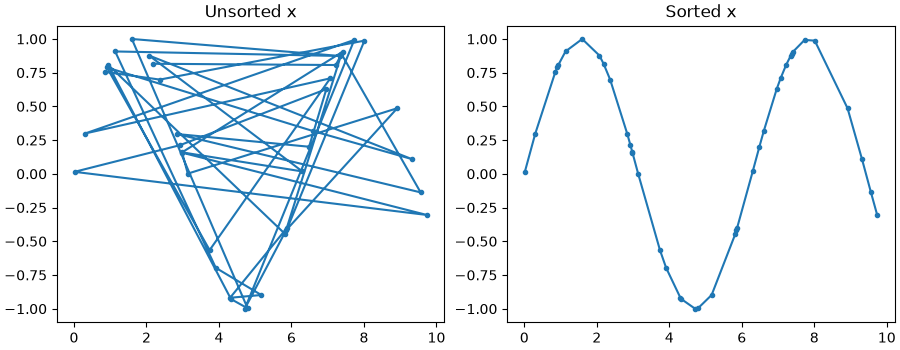
np.argsort(x) повертає індекси, які впорядковують x; тими самими індексами переставляємо y, щоб пари (x, y) не розірвались. У pandas те саме робить df.sort_values("x").
Пропуски розривають лінію¶
Якщо в даних є np.nan, matplotlib не малює відрізки до і після цієї точки. Це корисно: розрив на графіку чесно показує, що даних немає.
import matplotlib.pyplot as plt
import numpy as np
hours = np.arange(24)
temps = np.array([5, 4, 4, 3, 3, 3, 4, 6, 8, 10, 12, 13,
14, 15, 15, 14, 13, 11, 9, 8, 7, 6, 6, 5], dtype=float)
# датчик не працював з 9:00 до 12:00
temps[9:13] = np.nan
fig, ax = plt.subplots(figsize=(8, 3.5))
ax.plot(hours, temps, marker="o")
ax.set(title="Sensor data with a gap", xlabel="Hour", ylabel="Temperature, C")
ax.grid(True, alpha=0.3)
plt.show()
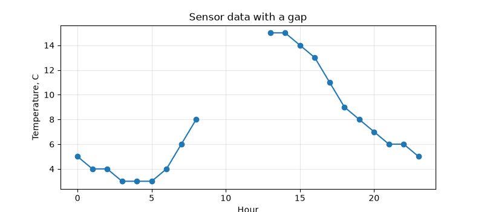
Не заповнюйте пропуски нулями
temps[9:13] = 0 намалює падіння температури до нуля посеред дня — цього не було. Пропуск — це np.nan (у pandas — NaN, лекція 32). Заповнювати пропуски (fillna, інтерполяція) можна лише свідомо і з поясненням на графіку.
Ступінчастий графік: step¶
Деякі величини змінюються стрибком і тримаються до наступної зміни: тариф, ціна, кількість працівників, стан пристрою. Звичайна лінія між такими точками бреше — вона показує плавний перехід, якого не було.
import matplotlib.pyplot as plt
# місяць, з якого діє тариф
months = [1, 4, 6, 10, 12]
price = [2.64, 2.64, 4.32, 4.32, 4.32]
fig, (ax1, ax2) = plt.subplots(1, 2, figsize=(9, 3.5), sharey=True, layout="constrained")
ax1.plot(months, price, marker="o")
ax1.set_title("plot: misleading slope")
ax2.step(months, price, where="post", marker="o")
ax2.set_title("step: price holds until change")
for ax in (ax1, ax2):
ax.set_xlabel("Month")
ax.grid(True, alpha=0.3)
ax1.set_ylabel("Price, UAH/kWh")
plt.show()
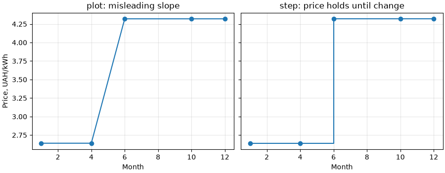
Параметр where визначає, де відбувається стрибок:
"post"— значення діє від точкиx[i]доx[i+1](тариф з 6-го місяця);"pre"— значення діє до точкиx[i];"mid"— стрибок посередині між точками.
Заливка між лініями: fill_between¶
ax.fill_between(x, y1, y2) зафарбовує область між двома кривими. Типове використання — діапазон: мінімум і максимум, похибка, прогнозний коридор.
import matplotlib.pyplot as plt
months = [1, 2, 3, 4, 5, 6, 7, 8, 9, 10, 11, 12]
t_mean = [-3.5, -2.4, 2.1, 9.4, 15.6, 19.0, 20.8, 20.0, 14.8, 8.6, 2.7, -1.6]
t_min = [-6.1, -5.6, -1.6, 4.8, 10.4, 14.0, 15.9, 15.0, 10.2, 4.8, 0.2, -3.9]
t_max = [-0.9, 0.6, 6.4, 14.6, 20.8, 23.9, 25.9, 25.2, 19.8, 12.8, 5.3, 0.8]
fig, ax = plt.subplots(figsize=(8, 4))
ax.fill_between(months, t_min, t_max, color="tab:blue", alpha=0.2, label="min - max")
ax.plot(months, t_mean, color="tab:blue", marker="o", label="mean")
ax.set(title="Kyiv: monthly temperature", xlabel="Month", ylabel="Temperature, C")
ax.legend(loc="upper left")
ax.grid(True, alpha=0.3)
plt.show()
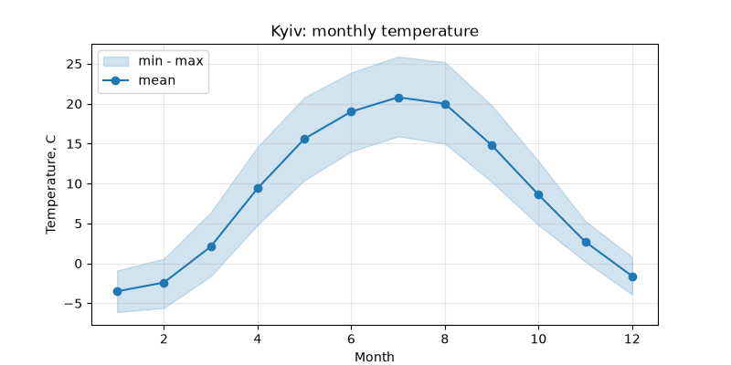
alpha=0.2 робить заливку напівпрозорою — лінія середнього і сітка лишаються видимими.
Умовна заливка: where¶
Параметр where — булевий масив: заливка лише там, де True. Так можна розфарбувати відхилення від норми вгору і вниз різними кольорами:
import matplotlib.pyplot as plt
import numpy as np
rng = np.random.default_rng(11)
days = np.arange(1, 31)
norm = np.full(30, 15.0)
actual = 15 + 3 * np.sin(days / 4) + rng.normal(0, 1, size=30)
fig, ax = plt.subplots(figsize=(8, 4))
ax.plot(days, actual, color="black", linewidth=1.5, label="actual")
ax.plot(days, norm, color="0.5", linestyle="--", label="norm")
ax.fill_between(days, actual, norm, where=actual >= norm,
color="tab:red", alpha=0.3, interpolate=True, label="warmer")
ax.fill_between(days, actual, norm, where=actual < norm,
color="tab:blue", alpha=0.3, interpolate=True, label="colder")
ax.set(title="Deviation from norm", xlabel="Day", ylabel="Temperature, C")
ax.legend(loc="lower left", ncols=2)
plt.show()
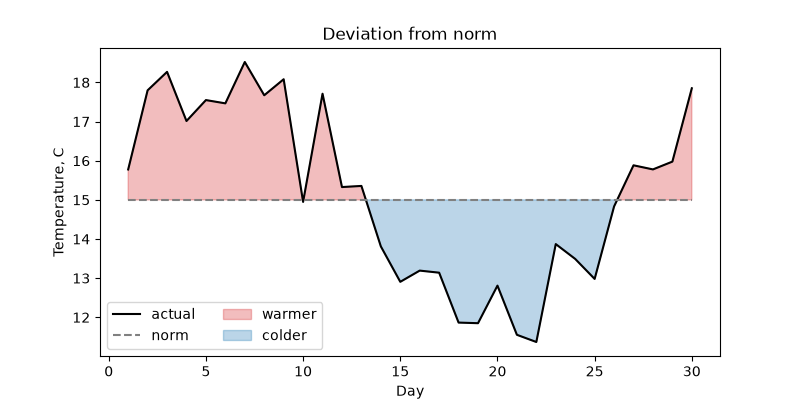
interpolate=True знаходить точку перетину ліній між сусідніми днями. Без нього заливка обривається на найближчій точці даних, і біля перетинів лишаються білі трикутники.
Межі осей і відступи¶
За замовчуванням matplotlib бере діапазон даних і додає 5% відступу з кожного боку. Змінити це можна кількома способами:
import matplotlib.pyplot as plt
import numpy as np
x = np.linspace(0, 10, 200)
y = 3 + np.sin(x)
fig, axes = plt.subplots(1, 3, figsize=(11, 3.2), sharey=False, layout="constrained")
axes[0].plot(x, y)
axes[0].set_title("default")
axes[1].plot(x, y)
axes[1].margins(x=0)
axes[1].set_title("margins(x=0)")
axes[2].plot(x, y)
axes[2].margins(x=0)
axes[2].set_ylim(bottom=0)
axes[2].set_title("margins(x=0), ylim(bottom=0)")
plt.show()
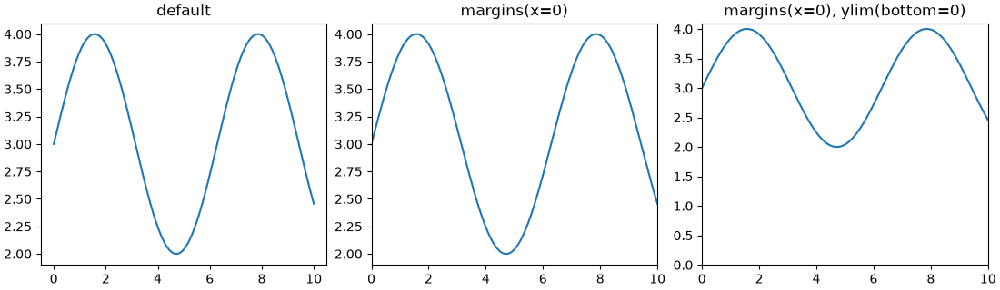
ax.margins(x=0)— лінія починається і закінчується точно на краях графіка. Для часових рядів це зазвичай виглядає охайніше;ax.set_ylim(bottom=0)— задає лише одну межу, другу matplotlib підбирає сам. Так самоtop=,left=,right=;ax.invert_yaxis()— перевертає вісь (глибина, місце в рейтингу: 1-ше місце — вгорі).
Чи починати вісь y з нуля?
Для bar — завжди (лекція 35). Для лінійного графіка — не обов'язково: лінія показує зміну, а не довжину. Температура 18–22 °C на осі від 0 до 25 стане майже прямою. Але якщо читач порівнюватиме абсолютні значення («удвічі більше»), нуль на осі потрібен.
Масштаб осі: лінійний і логарифмічний¶
Коли значення ростуть у рази (кількість користувачів, поширення вірусу, складність алгоритмів), на звичайній осі ранні дані злипаються біля нуля. Логарифмічна вісь показує не «на скільки», а «у скільки разів» змінилася величина.
import matplotlib.pyplot as plt
import numpy as np
months = np.arange(0, 25)
app_a = 100 * 1.30 ** months # +30% за місяць
app_b = 2000 * 1.10 ** months # +10% за місяць
fig, (ax1, ax2) = plt.subplots(1, 2, figsize=(10, 4), layout="constrained")
for ax in (ax1, ax2):
ax.plot(months, app_a, label="App A (+30%/month)")
ax.plot(months, app_b, label="App B (+10%/month)")
ax.set_xlabel("Month")
ax.set_ylabel("Users")
ax.grid(True, alpha=0.3)
ax.legend()
ax1.set_title("Linear scale")
ax2.set_yscale("log")
ax2.set_title("Log scale")
plt.show()
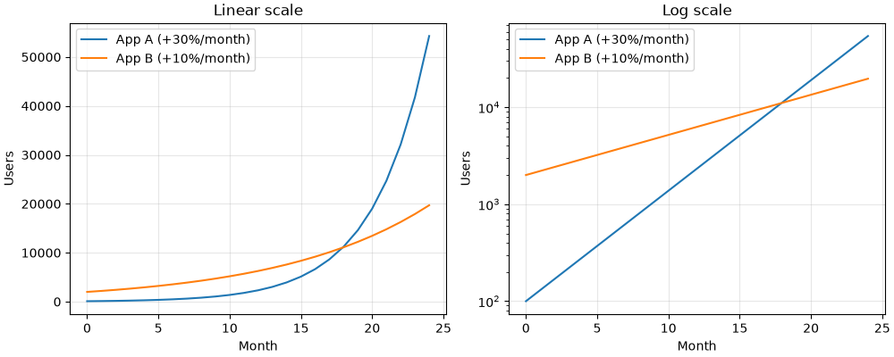
На логарифмічній осі:
- кожна основна поділка — у 10 разів більша за попередню (
10^2,10^3, ...); - експоненційне зростання — пряма лінія, а її нахил — темп зростання. Видно, що A росте швидше (крутіша лінія) і обганяє B приблизно на 17-му місяці;
- на лінійній осі видно лише «A вистрілила наприкінці», перші 12 місяців злиплися.
| Метод | Масштаб |
|---|---|
ax.set_yscale("linear") |
звичайний (за замовчуванням) |
ax.set_yscale("log") |
логарифмічний; лише додатні значення |
ax.set_yscale("symlog") |
логарифмічний з обох боків від нуля; дозволяє від'ємні значення |
ax.set_xscale(...) |
те саме для осі x |
Нуль і від'ємні числа на log-осі
log(0) не існує. Точки з y <= 0 на логарифмічній осі просто зникають (з попередженням у консолі). Якщо в даних є нулі — symlog або окремий графік.
Поділки: локатори¶
Локатор (locator) вирішує, де стоять поділки. У лекції 35 ми задавали їх списком через set_xticks. Це зручно для 12 місяців, але незручно, коли діапазон даних змінюється. Модуль matplotlib.ticker має локатори, які розставляють поділки за правилом:
import matplotlib.pyplot as plt
import numpy as np
from matplotlib.ticker import AutoMinorLocator, MaxNLocator, MultipleLocator
x = np.linspace(0, 48, 300)
y = 20 + 6 * np.sin(x / 24 * 2 * np.pi - 2)
fig, ax = plt.subplots(figsize=(9, 3.5))
ax.plot(x, y)
ax.margins(x=0)
# основні поділки по x кожні 6 годин, додаткові — кожну годину
ax.xaxis.set_major_locator(MultipleLocator(6))
ax.xaxis.set_minor_locator(MultipleLocator(1))
# по y не більше 5 основних поділок, додаткові — автоматично
ax.yaxis.set_major_locator(MaxNLocator(5))
ax.yaxis.set_minor_locator(AutoMinorLocator())
ax.grid(True, which="major", alpha=0.5)
ax.grid(True, which="minor", alpha=0.15)
ax.set(title="Two days of temperature", xlabel="Hour", ylabel="Temperature, C")
plt.show()
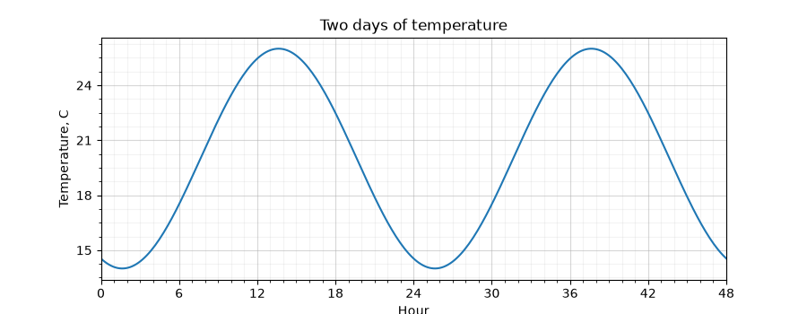
ax.xaxis/ax.yaxis— це ті самі об'єктиAxisз лекції 35. Налаштування поділок робиться саме на них;- major — основні поділки з підписами, minor — дрібні поділки без підписів;
grid(which="minor")— сітка по дрібних поділках; робимо її ще блідішою.
| Локатор | Що робить |
|---|---|
MultipleLocator(base) |
поділка кожні base одиниць |
MaxNLocator(n) |
не більше n «круглих» поділок |
AutoMinorLocator(n) |
ділить відрізок між основними поділками на n частин |
FixedLocator([...]) |
поділки у заданих точках (те, що робить set_xticks) |
NullLocator() |
жодної поділки |
Вигляд поділок: tick_params¶
ax.tick_params змінює вигляд поділок і їхніх підписів, не чіпаючи їхнього розташування:
import matplotlib.pyplot as plt
names = ["January", "February", "March", "April", "May", "June",
"July", "August", "September", "October", "November", "December"]
kyiv = [-3.5, -2.4, 2.1, 9.4, 15.6, 19.0, 20.8, 20.0, 14.8, 8.6, 2.7, -1.6]
fig, ax = plt.subplots(figsize=(8, 4), layout="constrained")
ax.plot(names, kyiv, marker="o")
ax.tick_params(axis="x", labelrotation=45, labelsize=9)
ax.tick_params(axis="both", direction="in", length=4)
ax.set_ylabel("Temperature, C")
plt.show()
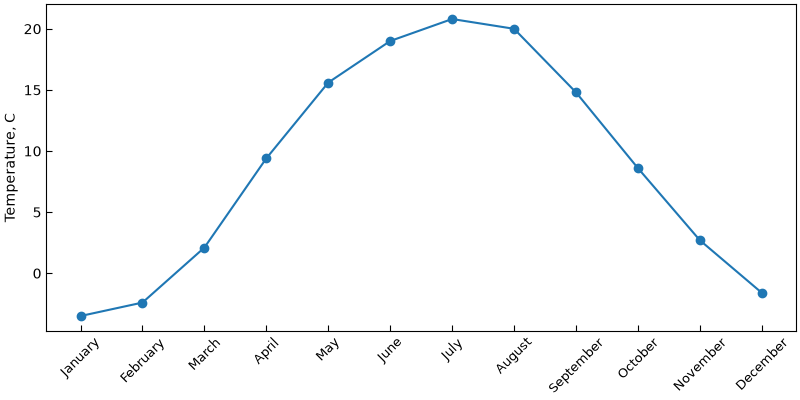
Довгі підписи повертаємо (labelrotation=45), щоб вони не налізали один на одного. Зверніть увагу: plot прийняв рядки як x — matplotlib сам поставив їх на позиції 0, 1, 2, .... Для назв місяців це доречно, бо місяці впорядковані.
Підписи поділок: форматери¶
Форматер (formatter) вирішує, що написано на поділці. Число 1500000 на осі краще показати як 1.5M, частку 0.25 — як 25%.
import matplotlib.pyplot as plt
import numpy as np
from matplotlib.ticker import FuncFormatter, PercentFormatter, StrMethodFormatter
months = np.arange(1, 13)
revenue = np.array([120, 135, 150, 148, 170, 210, 260, 250, 190, 175, 160, 230]) * 1000
conversion = np.array([2.1, 2.3, 2.2, 2.6, 2.8, 3.1, 3.4, 3.3, 2.9, 2.7, 2.6, 3.2]) / 100
visitors = revenue * 12
def millions(value, pos):
# pos — номер поділки; тут не потрібен, але matplotlib його передає
return f"{value / 1e6:.1f}M"
fig, axes = plt.subplots(1, 3, figsize=(12, 3.5), layout="constrained")
axes[0].plot(months, revenue)
axes[0].yaxis.set_major_formatter(StrMethodFormatter("{x:,.0f} UAH"))
axes[0].set_title("Revenue")
axes[1].plot(months, conversion, color="tab:orange")
axes[1].yaxis.set_major_formatter(PercentFormatter(xmax=1, decimals=1))
axes[1].set_title("Conversion")
axes[2].plot(months, visitors, color="tab:green")
axes[2].yaxis.set_major_formatter(FuncFormatter(millions))
axes[2].set_title("Visitors")
for ax in axes:
ax.set_xlabel("Month")
ax.grid(True, alpha=0.3)
plt.show()
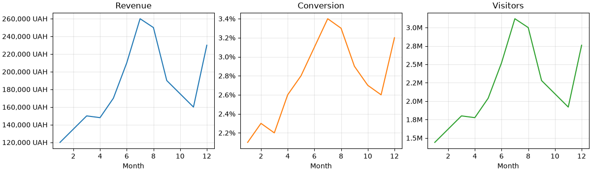
| Форматер | Приклад | Результат |
|---|---|---|
StrMethodFormatter("{x:,.0f} UAH") |
150000 |
150,000 UAH |
PercentFormatter(xmax=1) |
0.25 |
25% |
PercentFormatter(xmax=100) |
25 |
25% |
FuncFormatter(func) |
будь-яке | те, що поверне func(value, pos) |
У StrMethodFormatter значення поділки завжди називається x — навіть для осі y. Синтаксис той самий, що в f-рядках: , — розділювач тисяч, .0f — нуль знаків після коми.
Скорочений запис: у set_major_formatter можна передати одразу рядок або функцію — matplotlib сам обгорне їх у StrMethodFormatter / FuncFormatter:
import matplotlib.pyplot as plt
fig, ax = plt.subplots()
ax.plot([1, 2, 3], [1500, 2500, 4000])
ax.yaxis.set_major_formatter("{x:,.0f} UAH")
ax.xaxis.set_major_formatter(lambda value, pos: f"Q{value:.0f}")
ax.set_xticks([1, 2, 3])
plt.show()
Дати на осі x¶
Часові ряди зазвичай приходять із pandas із датами в індексі або стовпці (лекції 32 і 34). matplotlib розуміє datetime і pd.Timestamp напряму — plot можна передати стовпець дат як x. Проблема лише в підписах: за замовчуванням вони довгі й налазять один на одного.
import matplotlib.dates as mdates
import matplotlib.pyplot as plt
import numpy as np
import pandas as pd
rng = np.random.default_rng(5)
dates = pd.date_range("2025-01-01", "2025-12-31", freq="D")
day = np.arange(len(dates))
temps = 9 - 12 * np.cos(2 * np.pi * (day - 15) / 365) + rng.normal(0, 3, size=len(dates))
fig, (ax1, ax2) = plt.subplots(2, 1, figsize=(9, 6), layout="constrained")
ax1.plot(dates, temps, linewidth=0.8)
ax1.set_title("Default date labels")
ax2.plot(dates, temps, linewidth=0.8)
ax2.xaxis.set_major_locator(mdates.MonthLocator())
ax2.xaxis.set_major_formatter(mdates.ConciseDateFormatter(ax2.xaxis.get_major_locator()))
ax2.set_title("MonthLocator + ConciseDateFormatter")
for ax in (ax1, ax2):
ax.set_ylabel("Temperature, C")
ax.margins(x=0)
ax.grid(True, alpha=0.3)
plt.show()
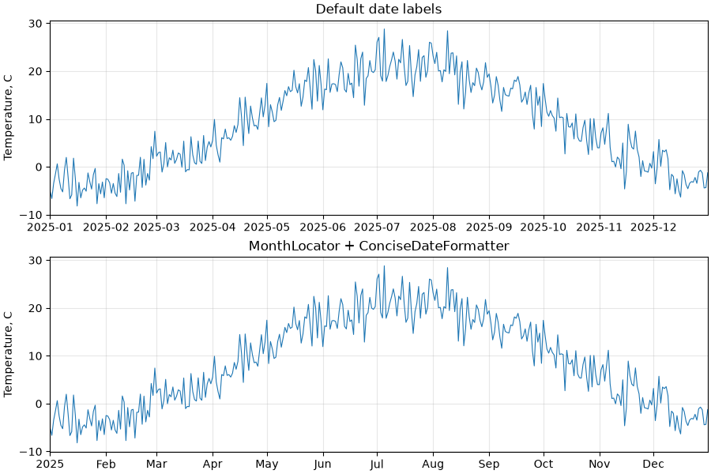
matplotlib.dates(скороченоmdates) — локатори й форматери для дат;MonthLocator()— поділка на початку кожного місяця; є такожDayLocator,WeekdayLocator,YearLocator,HourLocator;ConciseDateFormatter— «стислі» підписи: пише лише те, що змінилося (Feb,Mar, ...), а рік — один раз, у кутку.
Якщо потрібен власний формат, є mdates.DateFormatter з кодами strftime:
import matplotlib.dates as mdates
import matplotlib.pyplot as plt
import pandas as pd
dates = pd.date_range("2025-03-01", periods=14, freq="D")
visits = [120, 135, 128, 160, 190, 80, 75, 140, 150, 149, 170, 205, 90, 85]
fig, ax = plt.subplots(figsize=(8, 3.5), layout="constrained")
ax.plot(dates, visits, marker="o")
ax.xaxis.set_major_locator(mdates.DayLocator(interval=2))
ax.xaxis.set_major_formatter(mdates.DateFormatter("%d.%m"))
ax.set(title="Site visits", ylabel="Visits")
plt.show()
%d.%m — день і місяць (01.03), %Y — рік, %H:%M — година і хвилини.
fig.autofmt_xdate()
Швидкий спосіб «якось виправити» дати, що налазять: fig.autofmt_xdate() повертає підписи під кутом і вирівнює їх праворуч. ConciseDateFormatter зазвичай дає охайніший результат без повороту.
Рамка графіка: spines¶
Spines — чотири лінії, що утворюють рамку Axes: top, bottom, left, right. Звертаємося до них як до словника ax.spines["top"].
Верхня і права лінії рамки не несуть інформації. Їх часто прибирають, щоб графік виглядав «легше»:
import matplotlib.pyplot as plt
import numpy as np
x = np.linspace(-2 * np.pi, 2 * np.pi, 300)
fig, (ax1, ax2) = plt.subplots(1, 2, figsize=(10, 3.8), layout="constrained")
# 1. без верхньої та правої рамки
ax1.plot(x, np.sin(x))
ax1.spines[["top", "right"]].set_visible(False)
ax1.set_title("No top/right spines")
# 2. осі через нуль, як у підручнику математики
ax2.plot(x, np.sin(x))
ax2.spines[["top", "right"]].set_visible(False)
ax2.spines["left"].set_position("zero")
ax2.spines["bottom"].set_position("zero")
ax2.set_title("Spines through zero")
plt.show()
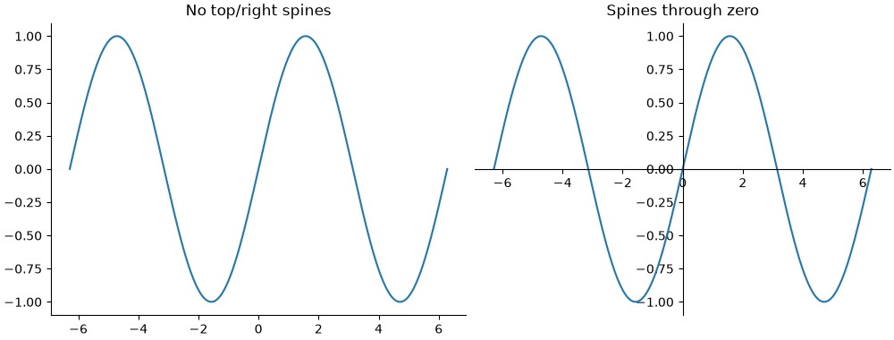
ax.spines[["top", "right"]]— можна вибрати кілька ліній одразу списком;set_position("zero")— переносить лінію осі в точку0іншої осі.
Однаковий масштаб осей: set_aspect¶
За замовчуванням одиниця по x і одиниця по y мають різну довжину на екрані — графік розтягується під розмір фігури. Для геометрії (коло, траєкторія, карта) це спотворення:
import matplotlib.pyplot as plt
import numpy as np
t = np.linspace(0, 2 * np.pi, 200)
fig, (ax1, ax2) = plt.subplots(1, 2, figsize=(9, 3.5), layout="constrained")
for ax in (ax1, ax2):
ax.plot(np.cos(t), np.sin(t))
ax.grid(True, alpha=0.3)
ax1.set_title("default aspect")
ax2.set_aspect("equal")
ax2.set_title("aspect = equal")
plt.show()
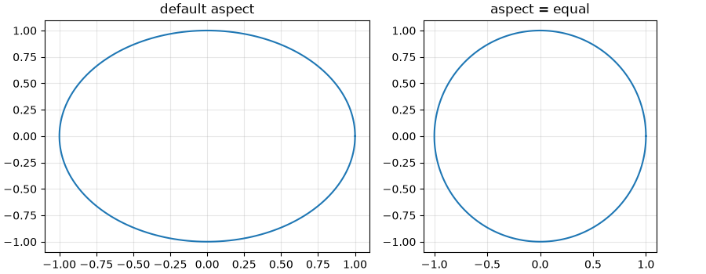
Дві осі y: twinx і чому краще без неї¶
Іноді хочеться на одному графіку показати дві величини з різними одиницями: температуру (°C) і опади (мм). ax.twinx() створює другий Axes зі спільною віссю x і власною віссю y праворуч:
import matplotlib.pyplot as plt
months = [1, 2, 3, 4, 5, 6, 7, 8, 9, 10, 11, 12]
temps = [-3.5, -2.4, 2.1, 9.4, 15.6, 19.0, 20.8, 20.0, 14.8, 8.6, 2.7, -1.6]
rain = [38, 40, 37, 45, 55, 72, 80, 65, 55, 45, 50, 45]
fig, ax1 = plt.subplots(figsize=(8, 4), layout="constrained")
ax2 = ax1.twinx()
ax2.bar(months, rain, color="tab:blue", alpha=0.3)
ax1.plot(months, temps, color="tab:red", marker="o")
ax1.set_xlabel("Month")
ax1.set_ylabel("Temperature, C", color="tab:red")
ax2.set_ylabel("Precipitation, mm", color="tab:blue")
ax1.set_zorder(ax2.get_zorder() + 1)
ax1.patch.set_visible(False)
plt.show()
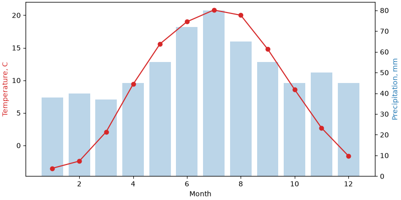
Останні два рядки — технічна деталь: ax2 створений пізніше і малюється поверх ax1. Піднімаємо ax1 наверх (zorder) і робимо його фон прозорим, щоб стовпчики не перекривали лінію.
Дві осі y легко вводять в оману
Масштаб кожної осі обирається довільно. Змінивши ylim однієї з них, можна зробити так, що лінії «перетинаються», «йдуть разом» або «розходяться» — хоча дані ті самі. Читач також мусить щоразу з'ясовувати, до якої осі належить лінія.
Надійніша альтернатива — два графіки один під одним зі спільною віссю x (sharex=True, лекція 35):
import matplotlib.pyplot as plt
months = [1, 2, 3, 4, 5, 6, 7, 8, 9, 10, 11, 12]
temps = [-3.5, -2.4, 2.1, 9.4, 15.6, 19.0, 20.8, 20.0, 14.8, 8.6, 2.7, -1.6]
rain = [38, 40, 37, 45, 55, 72, 80, 65, 55, 45, 50, 45]
fig, (ax1, ax2) = plt.subplots(2, 1, figsize=(8, 5), sharex=True,
height_ratios=[2, 1], layout="constrained")
ax1.plot(months, temps, color="tab:red", marker="o")
ax1.set_ylabel("Temperature, C")
ax1.grid(True, alpha=0.3)
ax2.bar(months, rain, color="tab:blue")
ax2.set_ylabel("Precipitation, mm")
ax2.set_xlabel("Month")
ax2.set_xticks(months)
fig.suptitle("Kyiv climate")
plt.show()
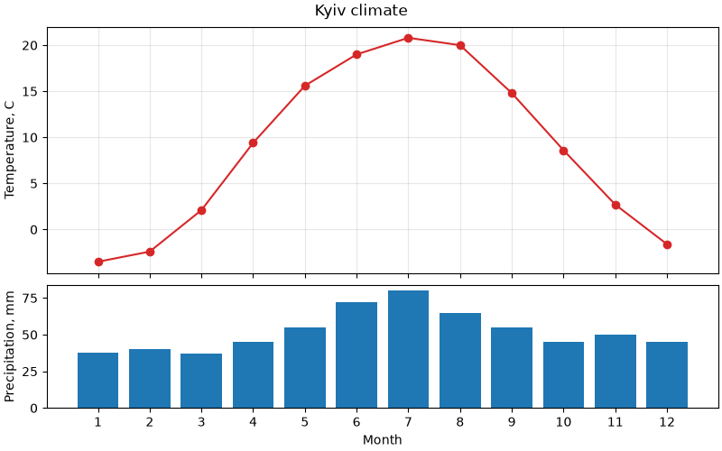
- кожна величина має свою вісь, свою шкалу і підпис — плутанини немає;
sharex=Trueвирівнює місяці по вертикалі, тож порівнювати їх так само легко;height_ratios=[2, 1]— верхній графік удвічі вищий за нижній.
Легенда: розташування¶
У лекції 35 ми бачили ax.legend(loc="upper left"). Можливі значення loc:
"upper left" "upper center" "upper right"
"center left" "center" "center right"
"lower left" "lower center" "lower right"
"best" (default)
"best" шукає місце, де легенда найменше перекриває дані. На великих масивах це повільно, і результат може змінюватися від запуску до запуску при зміні даних — у звітах краще задати loc явно.
Легенда поза графіком: bbox_to_anchor¶
Коли ліній багато, легенда всередині графіка закриває дані. Її можна винести назовні:
import matplotlib.pyplot as plt
months = [1, 2, 3, 4, 5, 6, 7, 8, 9, 10, 11, 12]
cities = {
"Kyiv": [-3.5, -2.4, 2.1, 9.4, 15.6, 19.0, 20.8, 20.0, 14.8, 8.6, 2.7, -1.6],
"Lviv": [-2.9, -1.8, 2.3, 8.3, 13.6, 16.6, 18.2, 17.6, 13.2, 8.3, 3.3, -1.1],
"Odesa": [-0.9, -0.3, 3.4, 9.3, 15.5, 20.0, 22.8, 22.4, 17.3, 11.5, 5.9, 1.3],
"Kharkiv": [-5.5, -4.9, 0.1, 8.4, 15.2, 18.8, 20.9, 20.0, 14.1, 7.6, 1.2, -3.1],
"Dnipro": [-3.9, -3.2, 1.8, 10.1, 16.5, 20.2, 22.5, 21.8, 16.0, 9.0, 2.5, -1.8],
"Uzhhorod": [-1.9, 0.1, 5.2, 11.2, 16.1, 19.4, 21.1, 20.6, 15.8, 10.2, 4.5, -0.3],
}
fig, ax = plt.subplots(figsize=(8, 4), layout="constrained")
for name, temps in cities.items():
ax.plot(months, temps, label=name)
ax.set(title="Average monthly temperature", xlabel="Month", ylabel="Temperature, C")
ax.legend(loc="upper left", bbox_to_anchor=(1.02, 1), title="City")
plt.show()
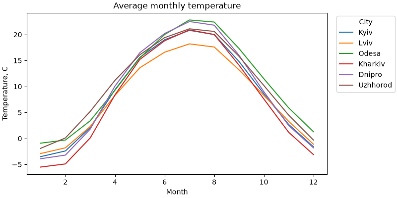
Як читати bbox_to_anchor=(1.02, 1) разом з loc="upper left":
- координати задані у частках
Axes:(0, 0)— лівий нижній кут графіка,(1, 1)— правий верхній; (1.02, 1)— точка трохи правіше правого верхнього кута;loc="upper left"— до цієї точки прикріплюється лівий верхній кут легенди.
layout="constrained" автоматично звужує графік, щоб легенда вмістилася у фігуру. Без нього легенда обріжеться краєм вікна (а savefig(..., bbox_inches="tight") її збереже, але розмір картинки зміниться).
Інший поширений варіант — легенда під графіком у кілька стовпців (ncols):
import matplotlib.pyplot as plt
import numpy as np
x = np.linspace(0, 2 * np.pi, 100)
fig, ax = plt.subplots(figsize=(8, 4), layout="constrained")
for k in range(1, 7):
ax.plot(x, np.sin(k * x) / k, label=f"sin({k}x)/{k}")
ax.legend(loc="upper center", bbox_to_anchor=(0.5, -0.12), ncols=3, frameon=False)
plt.show()
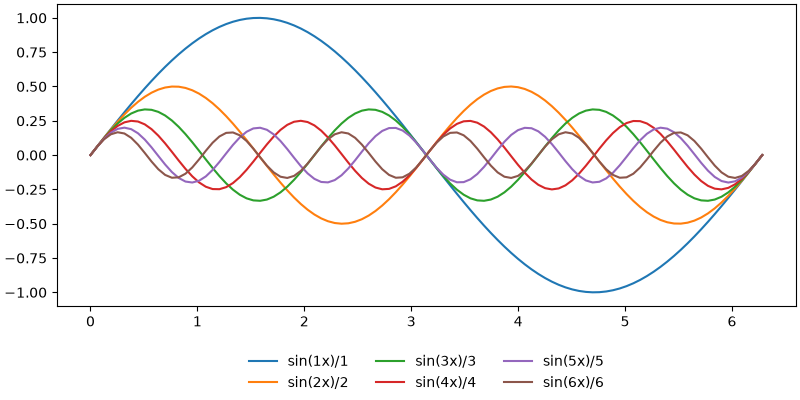
Основні параметри legend¶
| Параметр | Що робить |
|---|---|
loc |
яким кутом / стороною легенда прикріплюється |
bbox_to_anchor |
точка прикріплення (у частках Axes) |
ncols |
кількість стовпців |
title |
заголовок легенди |
frameon=False |
без рамки |
fontsize |
розмір тексту: число або "small", "large" |
reverse=True |
зворотний порядок елементів |
Легенда: що і в якому порядку показувати¶
Прибрати елемент з легенди¶
Легенда показує лише об'єкти з label. Допоміжні лінії (поріг, нуль, середнє) часто не потребують окремого рядка в легенді — їх просто не підписують. Якщо ж label вже є (наприклад, у циклі), matplotlib ігнорує підписи, що починаються з підкреслення:
import matplotlib.pyplot as plt
import numpy as np
rng = np.random.default_rng(2)
days = np.arange(1, 31)
fig, ax = plt.subplots(figsize=(8, 4))
for i in range(5):
# лише перша лінія потрапить у легенду
label = "simulations" if i == 0 else "_nolegend_"
ax.plot(days, np.cumsum(rng.normal(0, 1, 30)), color="0.6", linewidth=1, label=label)
ax.plot(days, np.zeros(30), color="tab:red", linewidth=2, label="expected")
ax.axhline(3, color="black", linestyle=":") # без label — не в легенді
ax.legend(loc="upper left")
plt.show()
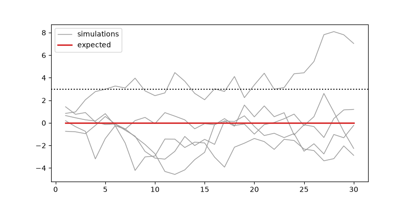
П'ять сірих ліній — це одна група, тому в легенді один рядок simulations, а не п'ять однакових.
Змінити порядок¶
ax.get_legend_handles_labels() повертає списки об'єктів (handles) і їхніх підписів. Їх можна переставити й передати в legend явно:
import matplotlib.pyplot as plt
years = [2020, 2021, 2022, 2023, 2024]
fig, ax = plt.subplots()
ax.plot(years, [10, 12, 15, 17, 22], label="Python")
ax.plot(years, [14, 14, 13, 12, 12], label="Java")
ax.plot(years, [8, 9, 11, 13, 15], label="JavaScript")
handles, labels = ax.get_legend_handles_labels()
# порядок як у кінці графіка: зверху вниз
order = [0, 2, 1]
ax.legend([handles[i] for i in order], [labels[i] for i in order])
ax.set(title="Popularity index", xlabel="Year", ylabel="Share, %")
ax.set_xticks(years)
plt.show()
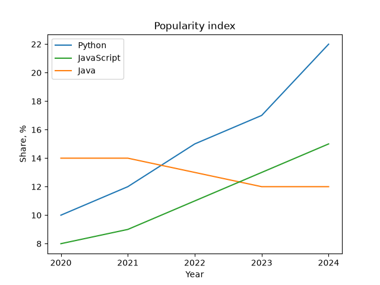
Правило: порядок у легенді має збігатися з порядком ліній на графіку (наприкінці, зверху вниз). Тоді око не стрибає між легендою і лініями.
Спільна легенда для кількох графіків¶
Якщо на кількох Axes ті самі серії, легенда в кожному — зайвий шум. fig.legend() створює одну легенду на рівні фігури:
import matplotlib.pyplot as plt
months = [1, 2, 3, 4, 5, 6, 7, 8, 9, 10, 11, 12]
temp_2024 = {"Kyiv": [-2.1, 1.5, 5.3, 12.1, 16.0, 21.3, 24.6, 22.5, 18.4, 10.1, 3.2, 0.5],
"Lviv": [-1.3, 2.4, 5.8, 10.9, 14.2, 18.9, 21.3, 20.1, 16.8, 9.7, 3.9, 0.9]}
temp_norm = {"Kyiv": [-3.5, -2.4, 2.1, 9.4, 15.6, 19.0, 20.8, 20.0, 14.8, 8.6, 2.7, -1.6],
"Lviv": [-2.9, -1.8, 2.3, 8.3, 13.6, 16.6, 18.2, 17.6, 13.2, 8.3, 3.3, -1.1]}
fig, axes = plt.subplots(1, 2, figsize=(10, 4), sharey=True, layout="constrained")
for ax, city in zip(axes, ["Kyiv", "Lviv"]):
ax.plot(months, temp_norm[city], color="0.5", linestyle="--", label="norm")
ax.plot(months, temp_2024[city], color="tab:red", label="2024")
ax.set_title(city)
ax.set_xlabel("Month")
axes[0].set_ylabel("Temperature, C")
# підписи беремо з першого графіка — на обох вони однакові
handles, labels = axes[0].get_legend_handles_labels()
fig.legend(handles, labels, loc="outside upper center", ncols=2)
plt.show()
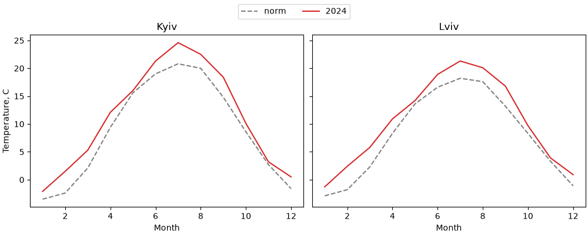
loc="outside upper center" працює лише з layout="constrained": легенда стає над усіма графіками, а графіки зсуваються, звільняючи для неї місце.
Підписи замість легенди та анотації¶
Прямі підписи¶
Легенда змушує читача зіставляти колір лінії з кольором у рамці. Коли ліній небагато (2–4), їх можна підписати прямо на графіку, біля кінця лінії:
import matplotlib.pyplot as plt
months = [1, 2, 3, 4, 5, 6, 7, 8, 9, 10, 11, 12]
cities = {
"Kyiv": [-3.5, -2.4, 2.1, 9.4, 15.6, 19.0, 20.8, 20.0, 14.8, 8.6, 2.7, -1.6],
"Lviv": [-2.9, -1.8, 2.3, 8.3, 13.6, 16.6, 18.2, 17.6, 13.2, 8.3, 3.3, -1.1],
"Odesa": [-0.9, -0.3, 3.4, 9.3, 15.5, 20.0, 22.8, 22.4, 17.3, 11.5, 5.9, 1.3],
}
# вертикальний зсув підпису в пунктах, щоб підписи не налізали один на одного
nudge = {"Kyiv": -6, "Lviv": 5, "Odesa": 0}
fig, ax = plt.subplots(figsize=(8, 4), layout="constrained")
for name, temps in cities.items():
(line,) = ax.plot(months, temps)
ax.annotate(name, xy=(months[-1], temps[-1]), xytext=(6, nudge[name]),
textcoords="offset points", va="center", color=line.get_color())
ax.spines[["top", "right"]].set_visible(False)
ax.set(title="Average monthly temperature", xlabel="Month", ylabel="Temperature, C")
ax.set_xticks(months)
plt.show()
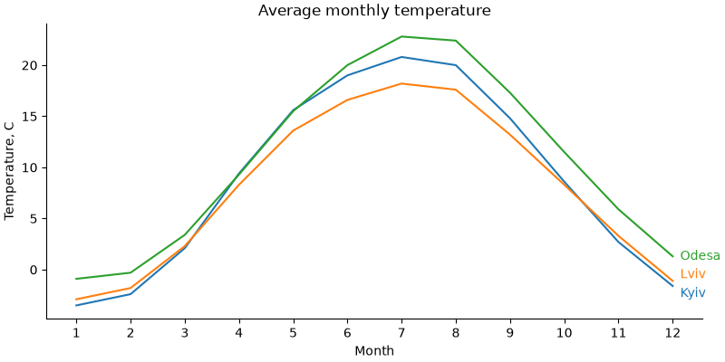
ax.plotповертає список ліній;(line,) = ...розпаковує єдиний елемент;line.get_color()— колір, який matplotlib призначив лінії автоматично;xy— точка, до якої прив'язаний текст (остання точка лінії),xytext=(6, ...)зtextcoords="offset points"— зсув на 6 пунктів праворуч від неї;- кінці ліній Києва і Львова майже збігаються (−1.6 і −1.1), тому їхні підписи трохи розсунуті по вертикалі словником
nudge. Прямі підписи часто потребують такого ручного доведення — це їхня ціна.
Анотації: text, annotate, axvspan¶
Хороший графік не лише показує дані, а й вказує на головне: максимум, аномалію, подію.
import matplotlib.pyplot as plt
import numpy as np
months = np.arange(1, 13)
kyiv = np.array([-3.5, -2.4, 2.1, 9.4, 15.6, 19.0, 20.8, 20.0, 14.8, 8.6, 2.7, -1.6])
i_max = np.argmax(kyiv)
fig, ax = plt.subplots(figsize=(8, 4), layout="constrained")
ax.plot(months, kyiv, marker="o", color="tab:blue")
# період, виділений фоном
ax.axvspan(5.5, 8.5, color="tab:orange", alpha=0.12)
ax.text(7, 1, "summer", ha="center", color="tab:orange")
# стрілка до максимуму
ax.annotate(f"max {kyiv[i_max]:.1f} C",
xy=(months[i_max], kyiv[i_max]),
xytext=(months[i_max] + 1.5, kyiv[i_max] + 2),
arrowprops={"arrowstyle": "->", "color": "black"})
# горизонтальна смуга: зона заморозків
ax.axhspan(-5, 0, color="tab:blue", alpha=0.08)
ax.text(12.3, -4.5, "frost", ha="right", color="tab:blue")
ax.set(title="Kyiv: average monthly temperature", xlabel="Month",
ylabel="Temperature, C", ylim=(-5, 25))
ax.set_xticks(months)
plt.show()
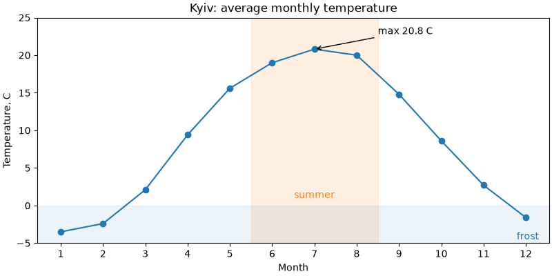
| Метод | Що робить |
|---|---|
ax.text(x, y, "...") |
текст у точці даних |
ax.annotate("...", xy=..., xytext=..., arrowprops=...) |
текст зі стрілкою до точки xy |
ax.axvspan(x1, x2) |
вертикальна смуга на всю висоту |
ax.axhspan(y1, y2) |
горизонтальна смуга на всю ширину |
Параметри ha / va (horizontal / vertical alignment) визначають, якою стороною текст прикріплюється до точки: ha="center" — центром, ha="left" — лівим краєм.
Стилі: plt.style¶
Усі кольори, шрифти, товщини ліній і сітки за замовчуванням зберігаються в наборі параметрів. Стиль — це готовий набір таких параметрів. Список вбудованих стилів:
28
['Solarize_Light2', 'bmh', 'classic', 'dark_background', 'fast', 'fivethirtyeight', 'ggplot', 'grayscale']
Застосувати стиль до всього скрипта — plt.style.use(...) на початку, до створення фігур:
import matplotlib.pyplot as plt
import numpy as np
plt.style.use("ggplot")
x = np.linspace(0, 10, 100)
fig, ax = plt.subplots()
ax.plot(x, np.sin(x), label="sin")
ax.plot(x, np.cos(x), label="cos")
ax.legend()
plt.show()
Щоб застосувати стиль лише до частини коду, використовують контекстний менеджер plt.style.context. Після виходу з блоку with налаштування повертаються:
import matplotlib.pyplot as plt
import numpy as np
x = np.linspace(0, 10, 100)
for style in ["default", "ggplot", "bmh", "dark_background"]:
with plt.style.context(style):
fig, ax = plt.subplots(figsize=(5, 3.2), layout="constrained")
ax.plot(x, np.sin(x), label="sin")
ax.plot(x, np.cos(x), label="cos")
ax.set_title(style)
ax.legend(loc="lower left")
plt.show()
Цей код відкриє чотири вікна. Ось вони поруч:
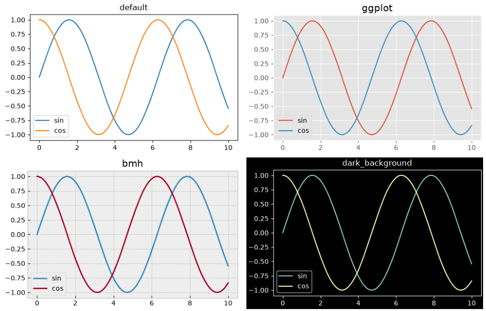
Деякі корисні стилі:
"default"— стандартний вигляд matplotlib;"ggplot"— сірий фон і біла сітка, як у пакеті ggplot2 з мови R;"bmh","fivethirtyeight"— стилі, що імітують відомі видання;"seaborn-v0_8-whitegrid","seaborn-v0_8-darkgrid"— стилі бібліотеки seaborn;"dark_background"— для темних слайдів;"grayscale"— відтінки сірого для чорно-білого друку.
Стиль діє в момент створення
Стиль застосовується до фігур і ліній, які створюються після plt.style.use. Уже створена фігура свій вигляд не змінить. Тому plt.style.use — одразу після імпортів.
rcParams: глобальні налаштування¶
Стиль — це просто набір значень у словнику plt.rcParams (rc — «run commands», історична назва конфігурації). Окремі параметри можна змінити напряму:
import matplotlib.pyplot as plt
print(plt.rcParams["figure.figsize"])
print(plt.rcParams["lines.linewidth"])
print(plt.rcParams["font.size"])
import matplotlib.pyplot as plt
import numpy as np
plt.rcParams["figure.figsize"] = (8, 4)
plt.rcParams["font.size"] = 12
plt.rcParams["lines.linewidth"] = 2.5
plt.rcParams["axes.spines.top"] = False
plt.rcParams["axes.spines.right"] = False
plt.rcParams["axes.grid"] = True
plt.rcParams["grid.alpha"] = 0.3
x = np.linspace(0, 10, 100)
fig, ax = plt.subplots()
ax.plot(x, np.sqrt(x))
ax.set(title="Custom rcParams", xlabel="x", ylabel="sqrt(x)")
plt.show()
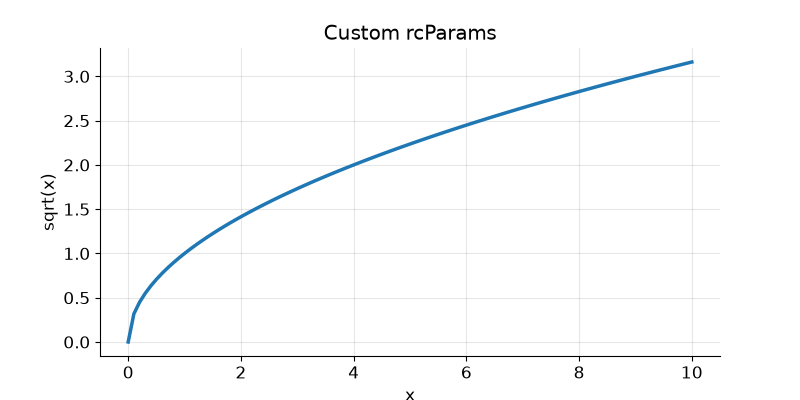
Тепер кожен графік у скрипті матиме такий вигляд — не треба повторювати spines, grid і figsize для кожного Axes.
Часто змінювані параметри:
| Ключ | Що задає |
|---|---|
figure.figsize |
розмір фігури, дюйми |
figure.dpi |
роздільна здатність на екрані |
savefig.dpi |
роздільна здатність savefig за замовчуванням |
font.size |
базовий розмір шрифту |
axes.titlesize, axes.labelsize |
розмір заголовка / підписів осей |
lines.linewidth, lines.markersize |
товщина ліній / розмір маркерів |
axes.grid, grid.alpha |
сітка за замовчуванням і її прозорість |
axes.spines.top, axes.spines.right |
показувати верхню / праву рамку |
legend.frameon |
рамка легенди |
Для тимчасової зміни — plt.rc_context, так само як plt.style.context:
import matplotlib.pyplot as plt
with plt.rc_context({"font.size": 16, "lines.linewidth": 4}):
fig, ax = plt.subplots()
ax.plot([1, 2, 3], [1, 4, 9])
ax.set_title("Big font for slides")
plt.show()
Скинути все до стандартних значень — plt.rcdefaults().
Цикл кольорів і стилів ліній¶
Коли ми не задаємо color, matplotlib бере кольори по черзі з циклу властивостей (axes.prop_cycle): tab:blue, tab:orange, tab:green, ... Цей цикл можна замінити.
Приклад: графік для чорно-білого друку, де лінії розрізняються не кольором, а стилем і маркером:
import matplotlib.pyplot as plt
months = [1, 2, 3, 4, 5, 6, 7, 8, 9, 10, 11, 12]
cities = {
"Kyiv": [-3.5, -2.4, 2.1, 9.4, 15.6, 19.0, 20.8, 20.0, 14.8, 8.6, 2.7, -1.6],
"Lviv": [-2.9, -1.8, 2.3, 8.3, 13.6, 16.6, 18.2, 17.6, 13.2, 8.3, 3.3, -1.1],
"Odesa": [-0.9, -0.3, 3.4, 9.3, 15.5, 20.0, 22.8, 22.4, 17.3, 11.5, 5.9, 1.3],
}
fig, ax = plt.subplots(figsize=(8, 4), layout="constrained")
ax.set_prop_cycle(color=["black", "0.35", "0.6"],
linestyle=["-", "--", ":"],
marker=["o", "s", "^"])
for name, temps in cities.items():
ax.plot(months, temps, label=name)
ax.set(title="Print-friendly lines", xlabel="Month", ylabel="Temperature, C")
ax.legend()
plt.show()
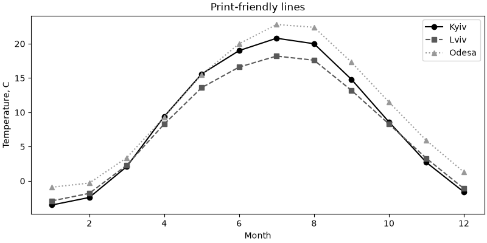
set_prop_cycleзадає цикл лише для цьогоAxes;- усі списки мають бути однакової довжини: i-та лінія отримує i-тий колір, i-тий стиль і i-тий маркер;
- для всього скрипта той самий цикл задають через
rcParams["axes.prop_cycle"]і функціюcyclerз однойменного пакета (встановлюється разом з matplotlib).
import matplotlib.pyplot as plt
import numpy as np
from cycler import cycler
plt.rcParams["axes.prop_cycle"] = cycler(color=["tab:blue", "tab:red", "tab:green"])
x = np.linspace(0, 1, 50)
fig, ax = plt.subplots()
for k in range(1, 4):
ax.plot(x, x ** k, label=f"x^{k}")
ax.legend()
plt.show()
Колір — не єдина ознака
Близько 8% чоловіків мають порушення кольорового зору. Якщо ліній більше двох, відрізняйте їх ще чимось: стилем лінії, маркером або прямим підписом. Тоді графік читається і на чорно-білому друку.
Власний файл стилю¶
Якщо у звітах потрібен однаковий вигляд графіків, налаштування виносять у файл *.mplstyle. Формат — ключ: значення, ті самі ключі, що в rcParams:
# report.mplstyle
figure.figsize: 8, 4
figure.dpi: 100
savefig.dpi: 150
savefig.bbox: tight
font.size: 11
axes.titlesize: 13
axes.titleweight: bold
axes.spines.top: False
axes.spines.right: False
axes.grid: True
grid.alpha: 0.3
lines.linewidth: 2
legend.frameon: False
axes.prop_cycle: cycler(color=["1f77b4", "d62728", "2ca02c", "9467bd"])
Кольори у файлі стилю пишуться без # — у форматі .mplstyle символ # починає коментар.
Файл підключається за шляхом:
from pathlib import Path
import matplotlib.pyplot as plt
import numpy as np
# у реальному проєкті файл report.mplstyle лежить поруч зі скриптом
Path("report.mplstyle").write_text(
"figure.figsize: 8, 4\n"
"savefig.dpi: 150\n"
"savefig.bbox: tight\n"
"font.size: 11\n"
"axes.titlesize: 13\n"
"axes.titleweight: bold\n"
"axes.spines.top: False\n"
"axes.spines.right: False\n"
"axes.grid: True\n"
"grid.alpha: 0.3\n"
"lines.linewidth: 2\n"
"legend.frameon: False\n"
'axes.prop_cycle: cycler(color=["1f77b4", "d62728", "2ca02c", "9467bd"])\n'
)
plt.style.use("report.mplstyle")
x = np.linspace(0, 10, 100)
fig, ax = plt.subplots()
ax.plot(x, np.sin(x), label="sin")
ax.plot(x, np.cos(x), label="cos")
ax.set(title="Report style", xlabel="x", ylabel="y")
ax.legend()
plt.show()
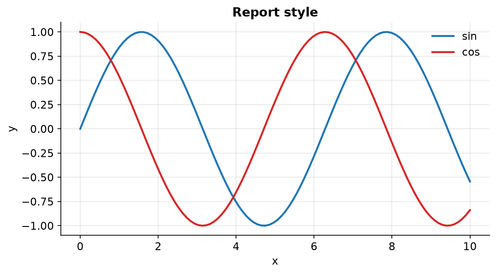
Стилі можна поєднувати списком — кожен наступний перекриває попередні: plt.style.use(["seaborn-v0_8-whitegrid", "report.mplstyle"]).
Приклад: погода за рік¶
Зберемо все разом. Згенеруємо щоденну температуру за рік, порахуємо ковзне середнє в pandas і побудуємо графік, готовий для звіту.
Одна нова для нас функція pandas — rolling(7).mean(): ковзне середнє за 7 днів. Для кожного дня береться середнє цього дня і шести попередніх. Ковзне середнє згладжує щоденний «шум» і показує тренд. Перші 6 значень будуть NaN — для них ще немає 7 днів історії, і лінія там не малюється.
import matplotlib.dates as mdates
import matplotlib.pyplot as plt
import numpy as np
import pandas as pd
from matplotlib.ticker import MultipleLocator
plt.rcParams["axes.spines.top"] = False
plt.rcParams["axes.spines.right"] = False
plt.rcParams["font.size"] = 10
rng = np.random.default_rng(2025)
# 1. дані: щоденна температура за рік
dates = pd.date_range("2025-01-01", "2025-12-31", freq="D")
day = np.arange(len(dates))
base = 9 - 12 * np.cos(2 * np.pi * (day - 15) / 365)
df = pd.DataFrame({
"t_min": base - 4 + rng.normal(0, 2.5, size=len(dates)),
"t_max": base + 4 + rng.normal(0, 2.5, size=len(dates)),
}, index=dates)
df["t_mean"] = (df["t_min"] + df["t_max"]) / 2
df["t_week"] = df["t_mean"].rolling(7).mean()
hot = df["t_max"] >= 28
print(f"days: {len(df)}, hot days (t_max >= 28): {hot.sum()}")
print(f"warmest day: {df['t_max'].idxmax().date()}, {df['t_max'].max():.1f} C")
# 2. графік
fig, ax = plt.subplots(figsize=(11, 4.5), layout="constrained")
ax.fill_between(df.index, df["t_min"], df["t_max"],
color="tab:blue", alpha=0.2, linewidth=0, label="daily min - max")
ax.plot(df.index, df["t_week"], color="tab:blue", linewidth=2, label="7-day mean")
ax.scatter(df.index[hot], df.loc[hot, "t_max"], color="tab:red", s=12,
zorder=3, label="t_max >= 28 C")
ax.axhline(0, color="black", linewidth=0.8)
# найтепліший день
warmest = df["t_max"].idxmax()
ax.annotate(f"{df.loc[warmest, 't_max']:.1f} C",
xy=(warmest, df.loc[warmest, "t_max"]),
xytext=(25, 5), textcoords="offset points",
arrowprops={"arrowstyle": "->"})
# 3. осі
ax.margins(x=0)
ax.xaxis.set_major_locator(mdates.MonthLocator())
ax.xaxis.set_major_formatter(mdates.ConciseDateFormatter(ax.xaxis.get_major_locator()))
ax.yaxis.set_major_locator(MultipleLocator(10))
ax.yaxis.set_minor_locator(MultipleLocator(5))
ax.yaxis.set_major_formatter("{x:.0f} C")
ax.grid(True, which="major", axis="y", alpha=0.4)
ax.grid(True, which="minor", axis="y", alpha=0.15)
# 4. підписи та легенда
ax.set_title("Daily temperature, 2025 (simulated)", loc="left", fontweight="bold")
ax.set_ylabel("Temperature")
ax.legend(loc="lower center", ncols=3, frameon=False)
fig.savefig("weather_2025.png", dpi=150)
plt.show()
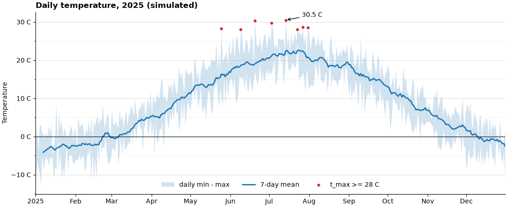
Що тут використано:
- дані — pandas:
date_range, стовпці,rolling, булева маскаhot,idxmax(індекс, тобто дата максимуму); - лінія + заливка —
fill_betweenпоказує діапазон дня,plot— згладжений тренд; - scatter поверх лінії —
zorder=3гарантує, що точки не сховаються під заливкою; - осі —
margins(x=0), дати черезConciseDateFormatter, поділки черезMultipleLocator, одиниці вимірювання прямо в підписах поділок; - сітка — лише горизонтальна (
axis="y"), бо температуру зчитують по горизонталі; - легенда — у рядок (
ncols=3) без рамки, внизу по центру: там, де влітку немає даних; rcParams— рамка без верхньої і правої лінії задана один раз на початку.
pandas df.plot() повертає Axes
df["t_mean"].plot() — це обгортка над matplotlib, яка повертає звичайний Axes. Усе з цієї лекції до нього застосовне: ax = df["t_mean"].plot(figsize=(10, 4)), далі ax.set_title(...), ax.legend(...), ax.xaxis.set_major_formatter(...). Можна й навпаки — малювати pandas на вже створеному Axes: df.plot(ax=ax).
Типові помилки¶
Невідсортовані x. plot з'єднує точки в порядку масиву — виходить «павутиння». Сортуйте: np.argsort або df.sort_values.
Лінія для категорій. Лінія між «Python» і «Java» не має сенсу. Для категорій — bar.
Нулі замість пропусків. 0 на графіку — це значення. Пропуск — np.nan, і лінія чесно розривається.
plot для ступінчастих даних. Тариф змінився 1 червня, а не «поступово з квітня по червень». Для таких даних — step(..., where="post").
Нуль або від'ємні числа на log-осі. Точки зникають. Перевіряйте (y <= 0).any() перед set_yscale("log").
set_major_formatter на ax замість ax.xaxis. Локатори і форматери належать осі (Axis), а не графіку (Axes): ax.xaxis.set_major_formatter(...). У ax такого методу немає — AttributeError.
StrMethodFormatter("{y:.0f}") для осі y. У форматі значення завжди називається x, незалежно від осі. {y} дасть KeyError.
Легенда поверх даних. Коли ліній багато, винесіть легенду назовні (bbox_to_anchor) або підпишіть лінії напряму.
Легенда поза графіком без layout="constrained". Легенда обрізається краєм фігури. Використовуйте layout="constrained" або savefig(..., bbox_inches="tight").
Порядок легенди не збігається з лініями. Верхня лінія на графіку — верхній рядок у легенді. Переставляйте через get_legend_handles_labels.
Дві осі y без потреби. twinx дає змогу «підкрутити» враження від графіка масштабом. Зазвичай краще два графіки з sharex=True.
plt.style.use після створення фігури. Уже створена фігура не зміниться. Стиль — одразу після імпортів.
Колір як єдина відмінність. На чорно-білому друку і для людей із порушенням кольорового зору лінії зливаються. Додавайте стиль лінії, маркер або прямий підпис.
set_prop_cycle зі списками різної довжини. ValueError. Усі списки мають бути однакової довжини.
Підсумок¶
- Лінійний графік — для часу та неперервних величин; дані відсортовані за
x, пропуски —np.nan. ax.step(..., where="post")— для значень, що змінюються стрибком.ax.fill_between(x, y1, y2)— діапазон між кривими;where=— умовна заливка.- Межі:
margins(x=0),set_ylim(bottom=0),invert_yaxis(). - Масштаб:
set_yscale("log")— зростання «у рази», експонента стає прямою. - Поділки:
ax.xaxis.set_major_locator(...)— де (MultipleLocator,MaxNLocator,AutoMinorLocator);ax.xaxis.set_major_formatter(...)— що написано (StrMethodFormatter,PercentFormatter,FuncFormatter);tick_params— вигляд. - Дати:
matplotlib.dates—MonthLocator,DateFormatter,ConciseDateFormatter. - Рамка:
ax.spines[["top", "right"]].set_visible(False);set_aspect("equal")для геометрії. twinx— дві осі y; частіше кращеsubplots(2, 1, sharex=True).- Легенда:
loc,bbox_to_anchor,ncols,title,frameon;_nolegend_— приховати;get_legend_handles_labels— порядок;fig.legend— одна на фігуру. - Анотації:
ax.text,ax.annotateзі стрілкою,axvspan/axhspan; прямі підписи замість легенди для 2–4 ліній. - Стилі:
plt.style.use(...),plt.style.context(...);plt.rcParams[...],plt.rc_context(...);set_prop_cycle— свій цикл кольорів і стилів;*.mplstyle— свій стиль у файлі.
Корисні посилання¶
- matplotlib: Axis scales
- Tick locators
- Tick formatters
- Date tick labels
- Legend guide
- Annotations
- Style sheets reference
- Customizing with style sheets and rcParams
Знайшли помилку чи бажаєте додати інформацію, щоб покращити курс? Створіть issue на GitHub